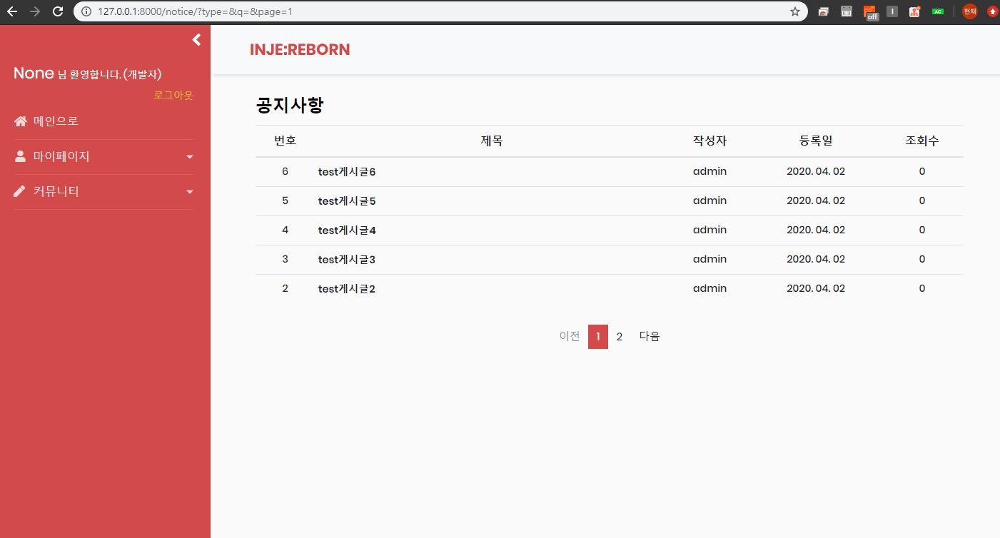

2020-04-01
Django 17. 게시판 글 리스트 / 페이징처리
ListView를 사용해서 게시판의 글 목록 보기와 페이지네이션을 구현합니다.
1. 글 리스트 보기 views.py 작성 공지사항 게시판의 전체 게시글을 표시하기 위해 Django에서 제공하는 Generic display views 중 ListView 를 사용합니다. notice 앱 내 views.py 에 ListView를 import하고 아래의 소스를 입력합니다.
1 2 3 4 5 6 7 8 9 10 11 12 13 14 # notice/views.py from django.views.generic import ListView from .models import Notice class NoticeListView(ListView): model = Notice paginate_by = 10 template_name = 'notice/notice_list.html' #DEFAULT : <app_label>/<model_name>_list.html context_object_name = 'notice_list' #DEFAULT : <model_name>_list def get_queryset(self): notice_list = Notice.objects.order_by('-id') return notice_list
Django의 ListView 를 사용하면 따로 Paginator를 import할 필요없이 paginate_by 로 한 페이지에 표시할 게시글의 개수를 정할 수 있습니다. 또한 DEFAULT로 template_name 과 context_object_name 이 정해져 있기에 템플릿에서 < model_name >_list 로 쿼리셋을 사용할 수 있습니다.
게시글의 리스트를 최근 작성순으로 표시하기 위해 get_queryset 메소드를 오버라이딩하여 order_by로 정렬을 한 후 쿼리셋을 반환합니다.
Django Generic Display Views 공식문서
2. 페이지네이션 커스텀 Django Paginator 를 사용하여 간단하게 페이징처리를 구현할 수 있지만 하단부의 페이지 숫자 범위를 커스텀하기 위해 get_context_data 메소드로 페이지 숫자 범위 Context를 생성하여 템플릿에 전달합니다. 따로 view를 생성하지 않고 NoticeListView 내에 아래와 같이 get_context_data 메소드를 추가합니다.
1 2 3 4 5 6 7 8 9 10 11 12 13 14 15 16 17 18 19 20 # notice/views.py def get_context_data(self, **kwargs): context = super().get_context_data(**kwargs) paginator = context['paginator'] page_numbers_range = 5 max_index = len(paginator.page_range) page = self.request.GET.get('page') current_page = int(page) if page else 1 start_index = int((current_page - 1) / page_numbers_range) * page_numbers_range end_index = start_index + page_numbers_range if end_index >= max_index: end_index = max_index page_range = paginator.page_range[start_index:end_index] context['page_range'] = page_range return context
2. urls.py 작성 urls.py 의 urlpatterns 에 NoticeListView의 path경로를 추가합니다.
1 2 3 4 5 # notice/urls.py urlpatterns = [ path('', views.NoticeListView.as_view(), name='notice_list'), ]
3. templates.py 작성 templates 내에 notice 폴더를 생성한 후 notice_list.html 을 생성합니다. 우선 get_queryset으로 반환되는 쿼리셋들을 테이블형식으로 출력하기 위해 아래와 같이 입력합니다.
1 2 3 4 5 6 7 8 9 10 11 12 13 14 15 16 17 18 19 20 21 22 23 24 25 26 27 28 29 30 31 32 <!-- templates/notice/notice_list.html --> <table> <thead> <tr class="text-center"> <th>번호</th> <th>제목</th> <th>작성자</th> <th>등록일</th> <th>조회수</th> </tr> </thead> <tbody> {% if notice_list %} {% for notice in notice_list %} <tr class="text-center"> <td>{{ notice.id }}</td> <td>{{ notice.title|truncatechars:30 }}</td> <td>{{ notice.writer }}</td> <td>{{ notice.registered_date|date:'Y. m. d' }}</td> <td>{{ notice.hits }}</td> </tr> {% endfor %} {% else %} <tr class="text-center"> <td colspan="5"> 작성된 게시글이 없습니다. </td> </tr> {% endif %} </tbody> </table>
게시글의 내용과 작성일에 Django의 템플릿 필터 를 적용합니다. truncatechars 는 문자열이 정해진 숫자보다 길면 자른 후 ‘…’ 으로 표시합니다. date 는 정해진 날짜 형식에 따라 표시합니다.
페이징 처리를 위한 코드는 아래와 같습니다. get_context_data 로 전달받은 context인 page_range 로 페이지의 표시범위를 제한합니다.
1 2 3 4 5 6 7 8 9 10 11 12 13 14 15 16 17 18 19 20 21 22 23 24 25 26 27 28 29 30 31 32 33 <!-- templates/notice/notice_list.html --> {% if is_paginated %} <ul class="pagination"> {% if page_obj.has_previous %} <li class="page-item"> <a class="page-link" href="?page={{ page_obj.previous_page_number }}" tabindex="-1">이전</a> </li> {% else %} <li class="page-item disabled"> <a class="page-link" href="#" tabindex="-1">이전</a> </li> {% endif %} {% for page in page_range %} <li class="page-item {% if page == page_obj.number %} activate {% endif %}"> <a class="page-link" href="?page={{ page }}">{{ page }}</a> </li> {% endfor %} {% if page_obj.has_next %} <li class="page-item"> <a class="page-link" href="?page={{ page_obj.next_page_number }}">다음</a> </li> {% else %} <li class="page-item disabled"> <a class="page-link" href="#">다음</a> </li> {% endif %} </ul> {% endif %}
5. 결과 django admin 페이지에서 공지사항 게시글을 6개 정도 생성한 뒤 view의 paginate_by를 5로 지정하면 아래와 같은 결과를 확인 할 수 있습니다.

*전체 html, css 등은 자세하게 포스팅하지 않습니다. 제 Github 에서 소스를 확인하실 수 있습니다.